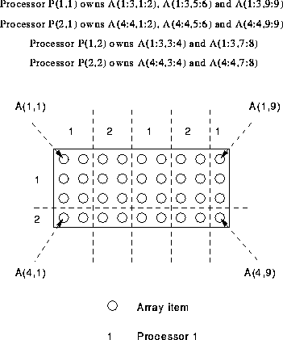

Consider the following 2D array A,
REAL, DIMENSION(4,9) :: A !HPF$ PROCESSORS, DIMENSION(2) :: P !HPF$ DISTRIBUTE (BLOCK(3),CYCLIC(2)) ONTO P :: A

BLOCK(m) must `use up' all the elements.
For more information, click here

Now try this question